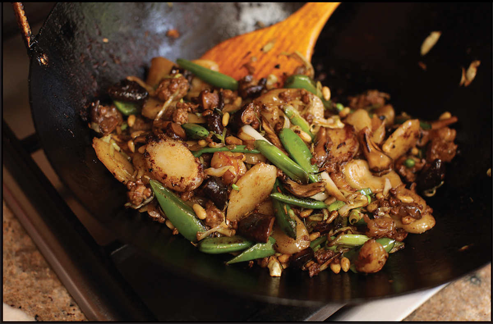

RICE CAKES WITH PORK, SHRIMP, PINE NUTS, AND VEGETABLES

Tteokbokki might be most famous in its chile-laced forms, but its history dates back only to the middle of the twentieth century, while stir-fried rice cakes predate even the introduction of chiles to Korean cuisine. Gungjung tteokbokki, or “royal tteokbokki,” for instance, features rice cakes stir-fried with beef, vegetables, and pine nuts and seasoned with soy sauce and sesame oil. The idea of using pine nuts in a stir-fry intrigued me, as did the idea of cooking down rice cakes in soy sauce until their edges crisp and the soy sauce forms a lightly charred glaze, similar to how it coats rice noodles in Beef Chow Fun (here) or Pad See Ew (here). You see stir-fries similar to this one in southern China, particularly in and around Shanghai.
Like many recipes in this book, I think of this one as more a blueprint than a recipe. You can use any green vegetable in place of the snap peas and any meat or tofu in place of the pork and shrimp. You could replace the shredded cabbage with Brussels sprouts leaves or shaved fennel or bok choy, or you could use a mix of mushrooms instead of the shiitake. Read through the recipe before hitting the supermarket and let your brain guide you once you’re there. Or just follow the recipe exactly as written and save your brain for something more important. Like architecture.
|
Yield Serves 4 |
Active Time 15 minutes Total Time 30 minutes |
If using frozen rice cakes, allow an additional 10 minutes of soaking time in step 1 so they thaw. For even more flavor, instead of ground pork and chopped shrimp, you can use 8 ounces of “The Mix” (here) if you have any around. You can also omit the shrimp and pork and increase the ratio of vegetables by 2 ounces each to keep this dish vegetarian.
INGREDIENTS
1 pound (450 g) Korean or Chinese rice cakes (see Notes)
Kosher salt
4 ounces (120 g/about 1 cup) snap peas, green beans, or other crunchy green vegetables cut into 1½-inch pieces
¼ cup (40 g) pine nuts
¼ cup (60 ml) peanut, rice bran, or other neutral oil
4 ounces (120 g/about 1 cup) shredded green cabbage
4 scallions, cut on a bias into 1½- to 2-inch pieces
4 ounces (120 g/about 1 cup) shiitake mushrooms, stems discarded, caps cut into quarters
4 ounces (120 g) ground pork
4 ounces (120 g) shrimp, peeled and cut into ½-inch pieces
2 teaspoons (5 g) minced garlic (about 2 medium cloves)
2 tablespoons (30 ml) light soy sauce
1 tablespoon (12 g) sugar
2 teaspoons (10 ml) roasted sesame oil
DIRECTIONS
1Place rice cakes in a large bowl and cover with water. Set aside while you cook the other ingredients.
2Heat a quart (1 l) of lightly salted water in a wok over high heat until boiling. Add the green vegetables and cook until bright green but still crisp, about 1 minute. Drain and spread the vegetables out on a large plate to cool and air-dry. Drain the rice cakes.
3Wipe out the wok, add the pine nuts, and toast over medium heat, tossing and stirring frequently, until golden brown and a toasty aroma hits your nose, about 3 minutes. Transfer to a large bowl and set aside.
4For the Stir-Fry: Heat the wok over high heat until lightly smoking. Add 1 tablespoon (15 ml) of the oil and swirl to coat. Add the cabbage and scallions and stir-fry, letting them sit undisturbed for 10 to 15 seconds at a time between tosses, until the cabbage is charred in spots, about 2 minutes. Transfer to the bowl with the pine nuts.
5Wipe out the wok and reheat over high heat until lightly smoking. Add a tablespoon (15 ml) of the remaining oil and swirl to coat. Add the mushrooms and stir-fry until lightly browned in spots, about 2 minutes. Transfer to the bowl with the cabbage mixture.
6Wipe out the wok and reheat over high heat until lightly smoking. Add a tablespoon (15 ml) of the remaining oil and swirl to coat. Add the drained green vegetables and stir-fry until lightly browned in spots, about 1 minute. Transfer to the bowl with the cabbage mixture.
7Wipe out the wok and reheat over high heat until lightly smoking. Add the remaining tablespoon (15 ml) of oil and swirl to coat. Add the pork and shrimp and stir-fry until the pork is no longer pink and the shrimp are no longer translucent, about 1 minute. Add the rice cakes, garlic, soy sauce, sugar, sesame oil, and the vegetable mixture from the bowl. Stir-fry until the sauce has evaporated and the rice cakes begin to char lightly in spots, about 2 minutes. Transfer to a serving platter and serve immediately.